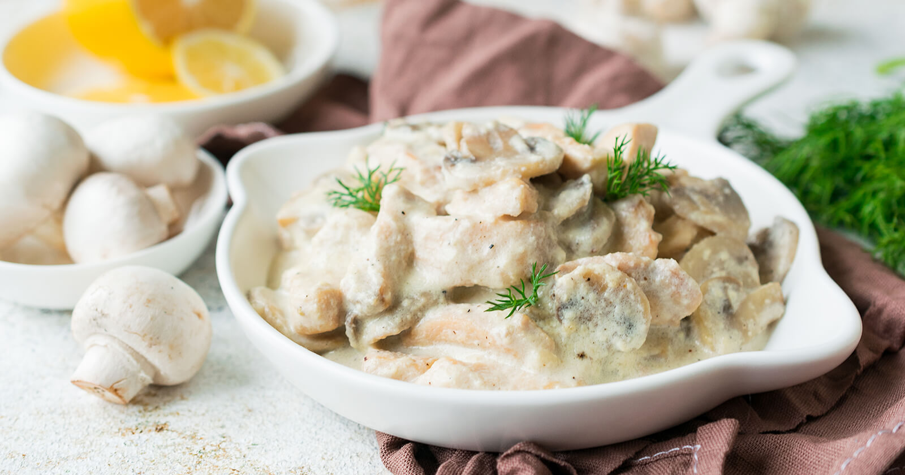

Chicken Fricassee

Description
The term Fricassee in and of itself refers to any dish of stewed meat
served in a gravy made with its own broth. While there are many
different preparations for Chicken Fricassee, this version is
based on my Oma's very own recipe. It's a wonderfully comforting meal filled
with plenty of juicy chicken and tender mushrooms. I generally serve it over
rice with a simple side salad. In addition,
this meal is fairly cost effective and easy to make. So grab your crockpot
and let's go!
Ingredients
- Roughly 1 lb chicken thighs or breasts
- 1 large yellow Onion
- Chicken Bullion
- Black Pepper
- 1 Lemon
- Butter
- Flour
- Salt
- 1 6.5 oz can of Mushrooms
Steps
- Place 1 lb of chicken in a crockpot with one roughly chopped yellow onion.
Add two tablespoons of chicken bullion and 3 1/2 cups of water. Set your crockpot on low
and let everything cook for 8-10 hrs.
- Remove the chicken from the broth.
Shred the chicken and set it aside along with the broth.
- In a large pan melt 4
tablespoons of butter. Add 3 tablespoons of flour to the melted butter, whisking constantly.
Let the flour and butter cook for about one minute.
- Slowly begin to ladle in your broth
while continuing to whisk. Your mixture will begin to thicken. Continue this process until
all of the broth is added. You should end up with a silky smooth consistency.
- Squeeze
in the juice of half of a lemon. You can go ahead and use the juice of the whole lemon if you like
things extra lemony.
- Add in salt and pepper to taste.
- Drain and add in one 6.5 oz
can of mushrooms. Feel free to use fresh mushrooms, just be sure to saute them before adding them
to your gravy.
- Add your shredded chicken into the pan. Let everything cook for an
additional 3-5 minutes.
- Finally you're ready to serve your Chicken Fricassee!
I recommend eating this dish over rice, but I'm sure it would be good over any carb. This dish also
pairs really well with a lemon dressing salad.
- Enjoy!